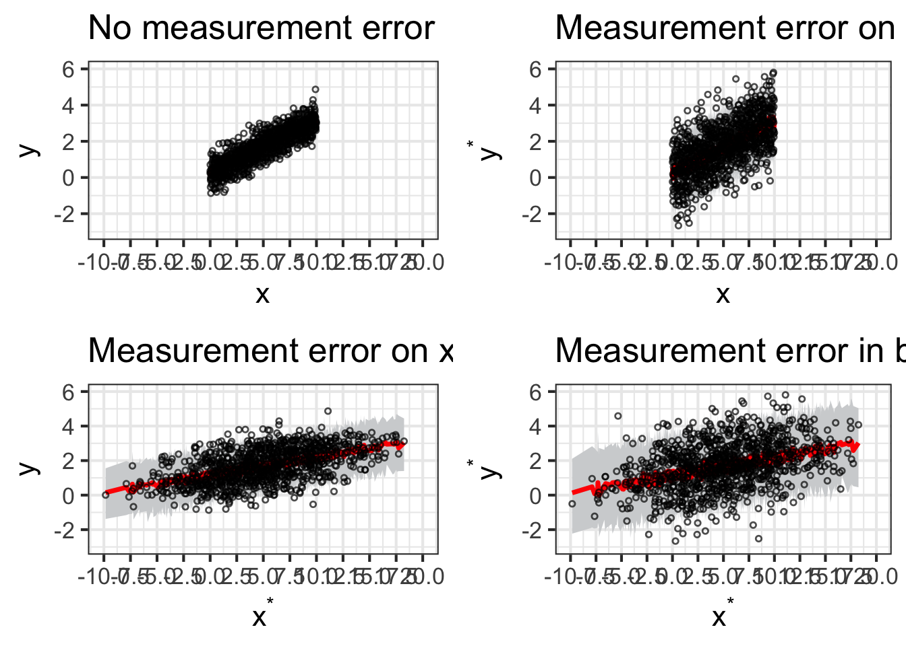
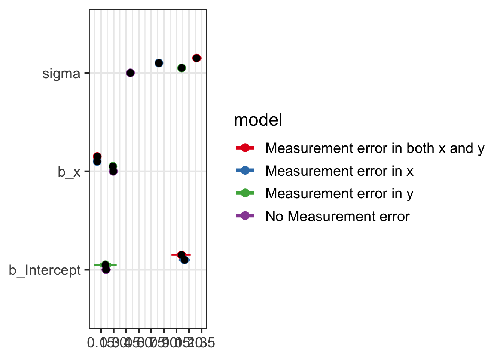

Error measurament simulations
Code
# Make random things reproducible
set.seed(1234)
# Bayes stuff
# Use the cmdstanr backend for Stan because it's faster and more modern than
# the default rstan. You need to install the cmdstanr package first
# (https://mc-stan.org/cmdstanr/) and then run cmdstanr::install_cmdstan() to
# install cmdstan on your computer.
options(mc.cores = 4, # Use 4 cores
brms.backend = "cmdstanr")
bayes_seed <- 1234
# Colors from MetBrewer
clrs <- MetBrewer::met.brewer("Java")
# Custom ggplot themes to make pretty plots
# Get Roboto Condensed at https://fonts.google.com/specimen/Roboto+Condensed
# Get Roboto Mono at https://fonts.google.com/specimen/Roboto+Mono
theme_pred <- function() {
theme_minimal(base_family = "Roboto Condensed") +
theme(panel.grid.minor = element_blank(),
plot.background = element_rect(fill = "white", color = NA),
plot.title = element_text(face = "bold"),
strip.text = element_text(face = "bold"),
strip.background = element_rect(fill = "grey80", color = NA),
axis.title.x = element_text(hjust = 0),
axis.title.y = element_text(hjust = 0),
legend.title = element_text(face = "bold"))
}
theme_pred_dist <- function() {
theme_pred() +
theme(plot.title = element_markdown(family = "Roboto Condensed", face = "plain"),
plot.subtitle = element_text(family = "Roboto Mono", size = rel(0.9), hjust = 0),
axis.text.y = element_blank(),
panel.grid.major.y = element_blank(),
panel.grid.minor.y = element_blank())
}
theme_pred_range <- function() {
theme_pred() +
theme(plot.title = element_markdown(family = "Roboto Condensed", face = "plain"),
plot.subtitle = element_text(family = "Roboto Mono", size = rel(0.9), hjust = 0),
panel.grid.minor.y = element_blank())
}
update_geom_defaults("text", list(family = "Roboto Condensed", lineheight = 1))Introduction
From Gelman et al. 2020 Regression and other stories, p. 458 and Gelman’s blog post on 14.04.2024:
Another form of incomplete data is measurement error. In the linear regression \(y = a+bx+error\), measurement error in \(y\) does not pose a problem, as it folds right into the error term. Suppose we would like to estimate the “underlying” model \(y_i = a + bx_i + e_i\) but \(y\) is itself measured with error, so that what we actually observe is \(y_i^* = y_i + \eta_i\). In that case, we can combine the two models to get \(y_i^* = a + bx_i + e_i + \eta_i\), and if the two error terms are independent and each with mean 0, this reduces to a linear regression of \(y^*\) on \(x\), which can be fit directly. So as long as \(e_i\) is independent of \(\eta_i\) , you can just combine them into a single error term.
Simulate
First , we are going to generate fake data, following the linear relationship \(y_i = a + bx_i + e_i\) with a priori fixed parameters values:
Code
#simulation for measurement error
set.seed(123)
n <- 1000 # number of observations
x <- runif(n, 0, 10) # predictor x with mean = 0 and sd = 10
a <- 0.2 # intercept, the mean value when x = 0
b <- 0.3 # influence of x on y
sigma <- 0.5 # also call in our model "e". It represents to what extent our model is able to predict y.
y <- rnorm(n, a + b*x, sigma)
fake <- data.frame(x,y)Then fit the linear model \(y_i = a + bx_i + e_i\) to the fake data:
Code
get_prior(formula = y ~ 1 + x, data = fake ) prior class coef group resp dpar nlpar lb ub tag
student_t(3, 1.7, 2.5) Intercept
(flat) b
(flat) b x
student_t(3, 0, 2.5) sigma 0
source
default
default
(vectorized)
defaultCode
fit_1 <- brm(formula = y ~ 1 + x,
family = gaussian,
data = fake,
prior = c(prior(normal(0, 0.2), class = Intercept),
prior(normal(0, 0.5), class = b),
prior(exponential(1), class = sigma)),
iter = 2000, warmup = 1000, cores = 4, chains = 4,
backend = 'cmdstanr',
silent = 2, refresh = 0,
seed = 15)
print(fit_1) Family: gaussian
Links: mu = identity
Formula: y ~ 1 + x
Data: fake (Number of observations: 1000)
Draws: 4 chains, each with iter = 2000; warmup = 1000; thin = 1;
total post-warmup draws = 4000
Regression Coefficients:
Estimate Est.Error l-95% CI u-95% CI Rhat Bulk_ESS Tail_ESS
Intercept 0.21 0.03 0.15 0.27 1.00 4485 2994
x 0.30 0.01 0.29 0.31 1.00 4779 3011
Further Distributional Parameters:
Estimate Est.Error l-95% CI u-95% CI Rhat Bulk_ESS Tail_ESS
sigma 0.50 0.01 0.48 0.52 1.00 3483 3003
Draws were sampled using sample(hmc). For each parameter, Bulk_ESS
and Tail_ESS are effective sample size measures, and Rhat is the potential
scale reduction factor on split chains (at convergence, Rhat = 1).Code
# generate posterior predictions
pred_1 <- fit_1 |>
add_predicted_draws(newdata = fake, ndraws = 100,
seed = 12345) |> mutate(model = "No Measurement error")Take home message:
The model returns exactly the fixed values we have previously determined.
Then we are going to add the error measurement \(\eta\) on \(y\) , so \(y_i^* = y_i + \eta_i\). We fixed de measurement error as \(\eta = 1\). Remember that \(e = 0.5\).
Code
sigma_y <- 1
fake$y_star <- rnorm(n, fake$y, sigma_y)Then we add some error measurement on x, generated \(x^*\). We fixed de measurement error as \(\tau = 4\).
Code
sigma_x <- 4
fake$x_star <- rnorm(n, fake$x, sigma_x)Then we fit again the same model, but with error measurement on \(y\)
Code
get_prior(formula = y_star ~ 1 + x, data = fake ) prior class coef group resp dpar nlpar lb ub tag
student_t(3, 1.7, 2.5) Intercept
(flat) b
(flat) b x
student_t(3, 0, 2.5) sigma 0
source
default
default
(vectorized)
defaultCode
fit_2 <- brm(formula = y_star ~ 1 + x,
family = gaussian,
data = fake,
prior = c(prior(normal(0, 0.2), class = Intercept),
prior(normal(0, 0.5), class = b),
prior(exponential(1), class = sigma)),
iter = 2000, warmup = 1000, cores = 4, chains = 4,
backend = 'cmdstanr',
silent = 2, refresh = 0,
seed = 15)
print(fit_2) Family: gaussian
Links: mu = identity
Formula: y_star ~ 1 + x
Data: fake (Number of observations: 1000)
Draws: 4 chains, each with iter = 2000; warmup = 1000; thin = 1;
total post-warmup draws = 4000
Regression Coefficients:
Estimate Est.Error l-95% CI u-95% CI Rhat Bulk_ESS Tail_ESS
Intercept 0.20 0.07 0.07 0.34 1.00 4166 3134
x 0.29 0.01 0.27 0.32 1.00 4080 3035
Further Distributional Parameters:
Estimate Est.Error l-95% CI u-95% CI Rhat Bulk_ESS Tail_ESS
sigma 1.11 0.02 1.07 1.16 1.00 3660 2569
Draws were sampled using sample(hmc). For each parameter, Bulk_ESS
and Tail_ESS are effective sample size measures, and Rhat is the potential
scale reduction factor on split chains (at convergence, Rhat = 1).Code
# generate posterior predictions
pred_2 <- fit_2 |>
add_predicted_draws(newdata = fake, ndraws = 100,
seed = 12345) |> mutate(model = "Measurement error in y")Then we fit again the same model, but with error measurement on \(x\)
Code
fit_3 <- brm(formula = y ~ 1 + x_star,
family = gaussian,
data = fake,
prior = c(prior(normal(0, 0.2), class = Intercept),
prior(normal(0, 0.5), class = b),
prior(exponential(1), class = sigma)),
iter = 2000, warmup = 1000, cores = 4, chains = 4,
backend = 'cmdstanr',
silent = 2, refresh = 0,
seed = 15)
print(fit_3) Family: gaussian
Links: mu = identity
Formula: y ~ 1 + x_star
Data: fake (Number of observations: 1000)
Draws: 4 chains, each with iter = 2000; warmup = 1000; thin = 1;
total post-warmup draws = 4000
Regression Coefficients:
Estimate Est.Error l-95% CI u-95% CI Rhat Bulk_ESS Tail_ESS
Intercept 1.15 0.04 1.07 1.22 1.00 4362 3116
x_star 0.10 0.01 0.09 0.11 1.00 6324 3617
Further Distributional Parameters:
Estimate Est.Error l-95% CI u-95% CI Rhat Bulk_ESS Tail_ESS
sigma 0.84 0.02 0.81 0.88 1.00 4548 3345
Draws were sampled using sample(hmc). For each parameter, Bulk_ESS
and Tail_ESS are effective sample size measures, and Rhat is the potential
scale reduction factor on split chains (at convergence, Rhat = 1).Code
# generate posterior predictions
pred_3 <- fit_3 |>
add_predicted_draws(newdata = fake, ndraws = 100,
seed = 12345) |> mutate(model = "Measurement error in x")Then we fit again the same model, but with error measurement on \(x^*\) and \(y^*\).
Code
fit_4 <- brm(formula = y_star ~ 1 + x_star,
family = gaussian,
data = fake,
prior = c(prior(normal(0, 0.2), class = Intercept),
prior(normal(0, 0.5), class = b),
prior(exponential(1), class = sigma)),
iter = 2000, warmup = 1000, cores = 4, chains = 4,
backend = 'cmdstanr',
silent = 2, refresh = 0,
seed = 15)
print(fit_4) Family: gaussian
Links: mu = identity
Formula: y_star ~ 1 + x_star
Data: fake (Number of observations: 1000)
Draws: 4 chains, each with iter = 2000; warmup = 1000; thin = 1;
total post-warmup draws = 4000
Regression Coefficients:
Estimate Est.Error l-95% CI u-95% CI Rhat Bulk_ESS Tail_ESS
Intercept 1.11 0.06 0.99 1.22 1.00 3905 2987
x_star 0.11 0.01 0.09 0.12 1.00 4131 2966
Further Distributional Parameters:
Estimate Est.Error l-95% CI u-95% CI Rhat Bulk_ESS Tail_ESS
sigma 1.29 0.03 1.24 1.35 1.00 4181 2789
Draws were sampled using sample(hmc). For each parameter, Bulk_ESS
and Tail_ESS are effective sample size measures, and Rhat is the potential
scale reduction factor on split chains (at convergence, Rhat = 1).Code
# generate posterior predictions
pred_4 <- fit_4 |>
add_predicted_draws(newdata = fake, ndraws = 100,
seed = 12345) |> mutate(model = "Measurement error in both x and y")Merge the four data frames with model’s predictions
Code
merg <- rbind(pred_1,pred_2,pred_3,pred_4)Then we plot:
Code
p1 <- ggplot(pred_1, aes(x = x)) +
stat_lineribbon(aes(y = .prediction), .width = 0.95, color = "red", fill = "#D1D3D5") +
geom_point(data = fake, aes(y = y), shape = 1, size = 1, alpha = 0.7) +
scale_x_continuous(limits = c(-10,20), breaks = seq(from = -10, to = 20, by = 2.5))+
scale_y_continuous(limits = c(-3, 6))+
labs(x = "x", y = "y", color = NULL, fill = NULL,
title = "No measurement error") +
theme_bw(base_size = 16)
p2 <- ggplot(pred_2, aes(x = x)) +
stat_lineribbon(aes(y = .prediction), .width = 0.95, color = "red", fill = "#D1D3D5") +
geom_point(data = fake, aes(y = y_star), shape = 1, size = 1, alpha = 0.7) +
labs(x = "x", y = expression(y^"*"),color = NULL, fill = NULL,
title = "Measurement error on y") +
scale_x_continuous(limits = c(-10,20), breaks = seq(from = -10, to = 20, by = 2.5))+
scale_y_continuous(limits = c(-3, 6))+
theme_bw(base_size = 16)
p3 <- ggplot(pred_3, aes(x = x_star)) +
stat_lineribbon(aes(y = .prediction), .width = 0.95, color = "red", fill = "#D1D3D5") +
geom_point(data = fake, aes(y = y), shape = 1,size = 1, alpha = 0.7) +
labs(x = expression(x^"*"), y = "y",color = NULL, fill = NULL,
title = "Measurement error on x") +
scale_x_continuous(limits = c(-10,20), breaks = seq(from = -10, to = 20, by = 2.5))+
scale_y_continuous(limits = c(-3, 6))+
theme_bw(base_size = 16)
p4 <- ggplot(pred_4, aes(x = x_star)) +
stat_lineribbon(aes(y = .prediction), , color = "red", fill= "#D1D3D5", .width = 0.95) +
geom_point(data = fake, aes(y = y_star),shape = 1, size = 1, alpha = 0.7) +
labs(x = expression(x^"*"), y =expression(y^"*"),color = NULL, fill = NULL,
title = "Measurement error in both x and y") +
scale_x_continuous(limits = c(-10,20), breaks = seq(from = -10, to = 20, by = 2.5))+
scale_y_continuous(limits = c(-3, 6))+
theme_bw(base_size = 16)
ggarrange(p1, p2, p3, p4,
ncol = 2, nrow = 2)
We can compare the regression coefficients:
Code
tidy_inter_1 <- bayesplot::mcmc_intervals_data(fit_1,
prob = 0.66, # 66% intervals
prob_outer = 0.95,#95% intervals
pars = vars(-contains(c("prior_", "lprior", "lp__")))) |> mutate(model = "No Measurement error")
tidy_inter_2 <- bayesplot::mcmc_intervals_data(fit_2,
prob = 0.66, # 66% intervals
prob_outer = 0.95,#95% intervals
pars = vars(-contains(c("prior_", "lprior", "lp__")))) |> mutate(model = "Measurement error in y")
tidy_inter_3 <- bayesplot::mcmc_intervals_data(fit_3,
prob = 0.66, # 66% intervals
prob_outer = 0.95,#95% intervals
pars = vars(-contains(c("prior_", "lprior", "lp__")))) |> mutate(model = "Measurement error in x")
tidy_inter_4 <- bayesplot::mcmc_intervals_data(fit_4,
prob = 0.66, # 66% intervals
prob_outer = 0.95,#95% intervals
pars = vars(-contains(c("prior_", "lprior", "lp__")))) |> mutate(model = "Measurement error in both x and y")
me <- rbind(tidy_inter_1, tidy_inter_2 , tidy_inter_3, tidy_inter_4) |> filter(parameter != "Intercept")
levels(me$parameter)[levels(me$parameter) == "b_x_star"] <- "b_x" # rename the b parameter where we use x_star
pos <- position_nudge(y = case_when(me$model == "No Measurement error" ~ 0,
me$model == "Measurement error in y" ~ 0.05,
me$model == "Measurement error in x" ~ 0.1,
me$model == "Measurement error in both x and y" ~ 0.15))
ggplot(me, aes(x = m, y = factor(parameter), color = model)) +
geom_pointinterval(aes(xmin = l, xmax = h), position = pos, size = 8)+
geom_pointinterval(aes(xmin = ll, xmax = hh), position = pos, size = 2)+
geom_point( position = pos, color = "black")+
theme_bw(base_size = 18) +
scale_color_brewer(palette = "Set1")+
labs(x = NULL, y = NULL)+
scale_x_continuous(breaks = seq(from = 0, to = 2, by = 0.15))
The slope \(b\) changes with measurement error in \(x\) but not in \(y\).
When you have measurement error in \(x\), two things happen to attenuate \(b\)—that is, to pull the regression coefficient toward zero.
- First, if you spreading out \(x\) but keep \(y\) unchanged, this will reduce the slope \(b\) of \(y\) on \(x\).
- Second, when you add noise to \(x\) you’re changing the ordering of the data, which will reduce the strength of the relationship.
Fitting a Bayesian regression with error measuraments on predictors \(x\)
Please see here.